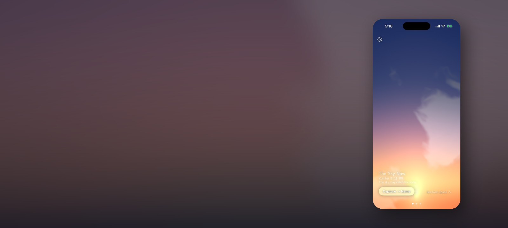
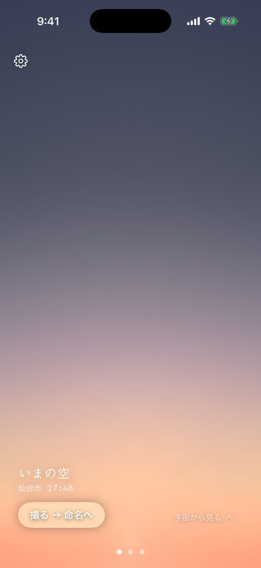
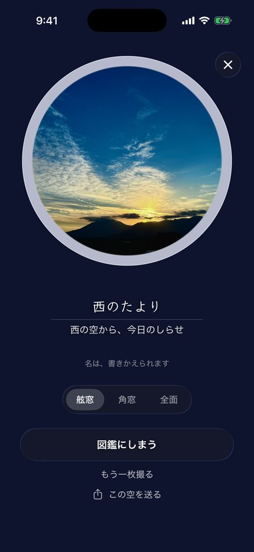
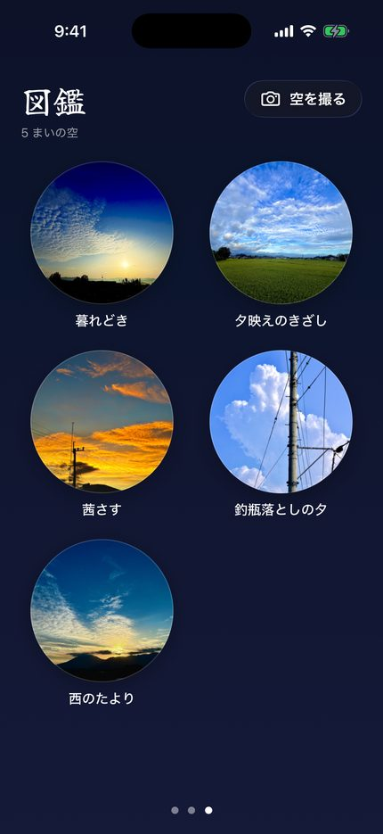

天名は、あなたの時刻・位置・いまの天気から、窓の外の空を端末の中で描く iOS アプリです。 写真でも衛星画像でもありません。太陽の高さと雲の量から、その場所のその瞬間の空を計算して描いています。



「空に名前をつけよう」—— アプリのための曲です。2人の声が、空に名前をつける歌をうたいます。
作る過程は隠さず書いています（英語・HackerNoon）。
Amana draws the sky outside your window — from your time, your location and the live weather — and then tries to get you to put the phone down and go look at the real one. Nothing here is a stock photo: the sky is computed on your device from the sun's position and today's cloud cover.